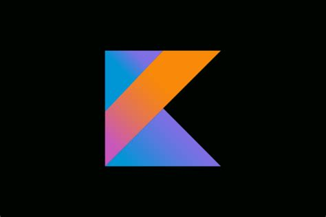

Kotlin:

Linguagem de programação mais moderna, estática e concisa, com o Kotlin você faz: Desenvolvimento Android, Desenvolvimento backend, Desenvolvimento multiplataforma, desenvolvimento desktop e web e até automação de Scripts, e bem
ele é usado em App's Android, backend web e até em projetos multiplataforma, startups e empresas que querem um código mais conciso e seguro que java.